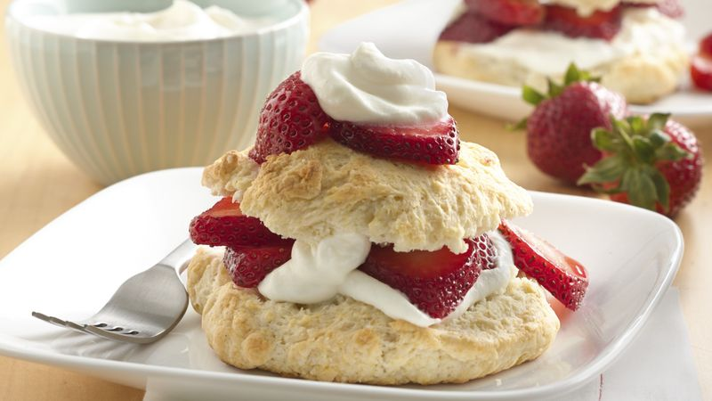

Bisquick Strawberry Shortcake

(Please click on the image above to follow the link to the original site and recipe!)
Light, fluffy Bisquick(TM) shortcakes!
A perfect complement to sweetened berries and freshly whipped cream! Give yourself 20 minutes
of prep time, 20 minutes cook time. Provides 6 servings. Enjoy!
Ingredients
- 4 cups sliced fresh strawberries
- 1/4 cup sugar
- 2 1/3 cups Bisquick(TM) Original Pancake and Baking Mix
- 2/3 cup milk
- 3 tbsp sugar
- 3 tbsp butter, melted
- 1/2 cup heavy whipping cream
Steps
-
Heat oven to 425 F, In large bowl, mix strawberies and 1/4 cup sugar; set aside.
-
In medium bowl, stir Bisquick™ mix, milk, 3 tablespoons sugar and the butter until
soft dough forms. On ungreased cookie sheet, drop dough by 6 spoonfuls.
-
Bake 16 to 17 minutes or until golden brown. Meanwhile, in small bowl, beat whipping
cream with electric mixer on high speed until soft peaks form.
-
Split warm shortcakes; fill and top with strawberries and whipped cream.
-
Enjoy!